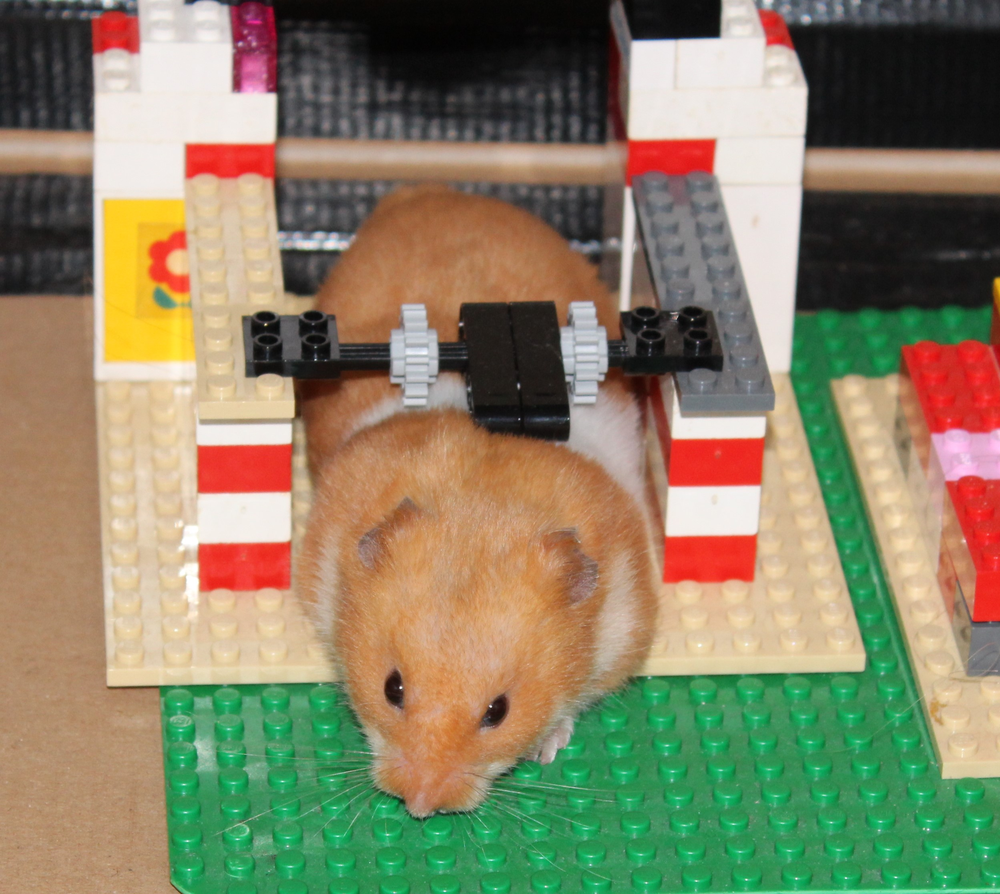

25-Sep-2017 | Milku
And I thought history was going to repeat itself.
At one point on Saturday, it looked like Everton were going to succumb to a one-nil defeat against Bournemouth at Goodison Park. It was like history was repeating itself. 50 years previously Everton had been beaten one-nil, albeit by Liverpool and playing away at Anfield...but even so... Thank goodness for Oumar Niasse. Two fine goals, a Man of the Match award and a new suit...sounds like it was a good Saturday for him.
And why did we know the football results from 50 years ago, I hear you ask. Well, for some reason, we'd acquired newspapers from 1967 for 22nd and 24th September...
My humans ventured out to Chill Factore on Saturday. I'm not sure I'd like to go somewhere that cold...minus three! But I suppose they think that a bit of exercise is better than staying at home reading the papers or watching the TV.
Don't get me wrong, exercising is OK, but a lazy Saturday snoozing and snacking is far more enjoyable.